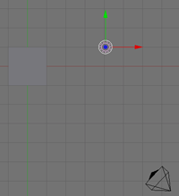
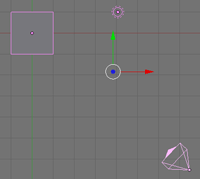
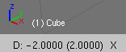
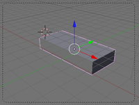

Ориентация в 3D-пространстве, перемещение и изменение объектов в Blender. Практическая работа. Урок 3
Инструкционная карта
| № | Задание | Способ выполнения | Иллюстрация |
|---|---|---|---|
| 1 | Сделайте окно 3D вида полноэкранным. | Shift + Space (пробел). При этом курсор должен находиться в окне 3D-вида. |
|
| 2 | Попробуйте перемещать 3D-курсор. | Щелчок левой клавишей мыши в любое место 3D-окна. | |
| 3 | Поочередно выделяйте камеру, лампу и куб. | Щелчок правой клавишей мыши по тому или иному объекту. |  |
| 4 | Выделите три объекта вместе (групповое выделение). | Щелчки правой клавишей мыши по кубу, камере и лампе при зажатой клавише Shift. |  |
| 5 | Измените тип окна на вид спереди, затем сбоку и, наконец, вид из камеры. | Нажатие на NumPad'е 1, затем 3 и 0. |  |
| 6 | Выделите один куб. | Щелчок правой кнопкой по объекту. | |
| 7 | Переместите куб по оси X на -2 единицы. | Зажав Ctrl, потянуть за красную ось назад (при этом наблюдать за изменением значения в нижнем левом углу 3D-окна). |
 |
| 8 | Переместите куб по оси Y на 3 единицы. | Потянуть за зеленую ось вправо. | |
| 9 | Переместите куб по оси Z на -1 единицу. | Потянуть за синюю ось вниз. | |
| 10 | Увеличьте куб по оси X в 3 раза. | Нажать S на клавиатуре, затем X. Зажать Ctrl и двигать мышью, добиваясь в нижнем левом углу 3D-окна значения в 3 целых. Примечание: чем ближе курсор мыши к объекту, тем сильнее влияет движение мыши на изменение объекта. |
|
| 11 | Увеличьте куб по оси Y в 1.3 раза. | S, затем Y. | |
| 12 | Уменьшите куб по оси Z в 2 раза. | S, затем Z. Тянуть до значения в 0.5. |  |
| 13 | Поверните брусок по оси X на -15 градусов | N. В появившемся плавающем окне в поле RotX ввести значение -15. Нажать Enter. | |
| 14 | Поверните брусок по оси Y на -10 градусов | В поле RotY ввести значение -10. Нажать Enter. | |
| 15 | Посмотрите получившееся изображение. | F12 | |
| 16 | Сохраните его, обратив внимание, что сохраняется не файл сцены с расширением .blend, а именно картинка (в формате JPEG). |
F3 |